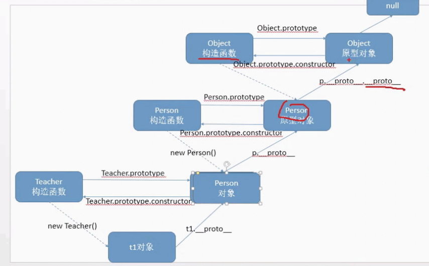

javascript高级
javascript 是解释语言（解释语言比编译语言执行速度慢）,解释语言优点是灵活、动态特性，随意增加属性和方法。
javascript 中函数是一等公民，在java和c#中类是一等公民
javascript 执行环境：宿主环境 浏览器
1.理解面向对象的开发思想
2.掌握javascript面向对象开发的相关模式
3.javascript正则表达式
创建对象的方式建议使用构造函数的方式
使用构造函数创建对象，我们可以使用 instanceof 的方式来判断某个对象是否是某个构造函数的实例
console.log(hero instanceof Hero); 返回值 true | false
静态成员 和 实例成员：在工具中使用实例成员！
静态成员
Math对象不是构造函数，它具有数学常数和函数的属性和方法，都是以静态成员的方式提供。
Math.PI
Math.max()
......
构造函数的原型（多个对象的方法是一个），这个方法不要在构造函数定义！！！
//创建对象示例,所有的构造函数都有一个属性 ： 原型。 prototype对象。
//构造函数创建的所有对象都可以访问原型创建的方法！！！
//构造的函数的原型只有一个，而原型的sayHi某个方法也只有一份，这样就达到了多个对象的方法只有一份。
当调用对象的属性和方法时，先去找对象本身的属性和方法，如果没有属性和方法，此时
去调用原型中的属性和方法。
对象的__proto__ 等于 构造函数的 prototype
console.log(s1.__proto__ === Student.prototype) //true
示例：
function Student(name, age){
this.name = name;
this.age = age;
}
Student.prototype.sayHi = function(){
console.log("Hello "+ this.name);
}
__proto__ 是非标准的属性，所以在开发中不要使用。
原型对象prototype也是对象，只要是对象就有 __proto__ 属性。
在原型对象，有一个属性 constructor ，这个属性指向了构造函数。
所以 s1.constructor 是可以访问的，因为对象可以访问原型里面的属性和方法。
constructor 记录了创建对象的构造函数，通过它可以判断对象通过哪个构造函数创建的
console.log(s1.constructor === Student);
构造函数 原型对象 对象实例 三者关系 原型链

console.log(s1.__proto__.__proto__ === Object.prototype); //true
//所有对象都有 toString()方法 , 这个toString() 就是在Object定义的！！
所以： 读取属性 调用方法是顺序是：首先在对象本身找，找不到按照对象的原型链依次向上查找。
设置属性，如 s1.test = '123';只会搜索s1的test属性，
如果s1没有test属性，就会添加test属性，而不会设置原型链的test属性。
如果原型链有test属性，此时就会屏蔽原型的test属性.
使用原型的注意点
一般情况，对象的属性在构造函数中设置，对象的方法在原型中设置,例如
function Student(name){
this.name = name
}
//设置方法 当我们改变构造函数的prototype时，需要重新设置constructor！！
Student.prototype = {
//构造函数
constructor:Student,
//方法
show:function(){},
pring:function(){},
.......
}
//另外还要注意：一定要先设置好原型对象 即 Student.prototype = {}, 然后才能 var s1 = new Student()！！！
//即 先设置prototype，后创建对象！！
原型对象的应用:扩展内置对象（比如数组 Array）的方法（自己经常用的）
在 方法 中的this 是 ：哪个对象调用这个方法，this就是谁！！！只有调用方法后，才能确定this是指向哪个对象
//给内置对象 Array 添加一个方法 getSum
Array.prototype.getSum = function(){
var sum = 0;
for (var i = 0; i < this.length; i++) {
sum += this[i];
}
return sum;
}
var arr = [1, 2, 3, 4, 5];
arr.getSum(); //15
这里不能修改内置对象的 prototype ！！！ 即 不能这样 Array.prototype = { ....}
在实际开发中，我们应该在common.js中定义各个函数分类封装在不同的对象中，方便管理。
在实际开发中，我们常常把一个模块写在一个js文件中，js文件的文件名要用小写
bind 方法是ES5新增的方法，bind的第一个参数可以改变函数的指向，bind并没有调用方法
var a = 123;
var fn = function () { console.log(this.a); } //this ->window
fn(); //输出 123
var obj = {a : 'abc' };
var fn1 = fn.bind(obj); //this -> obj
fn1(); //相当于 obj.fn(); //输出 abc
//这里的fn1是基于fn新创建的方法，只不过方法中的this指向发生了改变。由window 变成了 obj;
自调用函数,在实际开发中，为了防止各个js文件中的变量冲突(默认是全局作用域)，应该为每个模块开辟一个作用域，
函数能开辟作用域，所以，在一个js文件中应该使用自调用函数！！！
;(function(){
......js代码......
//构造函数
function Food(name){
this.name = name
}
//原型方法
Food.prototype.show = function(){
console.log(this.name);
}
//这个方法外界访问不到！！！！因为这个方法在自调用匿名函数的作用域内。
function delete(){
console.log("delete");
}
//把Food暴露给window
window.Food = Food; //在window顶级对象中创建一个Food对象，把构造函数赋值给这个对象。
})()
var food = new Food(); //new Food === new window.Food
自调用函数问题
当我们开发的时候，我们把各个模块分成若干个js文件，当我们部署的时候要把这些js文件合并成一个文件。这样在访问网页的时候
我们只需要下载一个文件即可（发送一次请求比发送多个请求更快），大大提高网页访问速度！！
当我们合并多个js文件时，应该把所有的自调用函数的前面加分号 ，例如
一定要在自调用函数的前面添加分号！！！
在自调用函数中我们常常传入两个参数 window 和 undefined （为了压缩和防止undefined被重新赋值,老版本的undefined可以被修改！！）
//自调用函数1
;(function(window,undefined){
})(window,undefined)
//自调用函数2
;(function(window,undefined){
})(window,undefined)
为了提高网页访问速度，还要压缩代码(js文件的空白 注释 甚至变量的名字越短越好)
对象的继承
//模拟对象的拷贝
function extend(parent, child) {
for (var key in parent ) {
if (child[key]) {
continue;
}
child[key] = parent[key];
}
}
继承是类型和类型的关系，不是对象的拷贝
真正的继承是类型和类型的关系，javascript的构造函数描述的是一个类型
方法1：利用原型模拟继承
//Person
function Person(name,age){
this.name = name;
this.age = age;
}
//Student
function Student(score){
this.score = score;
}
//设置Student的原型对象
Student.prototype = new Person();
Student.prototype.constructor = Student;
//原型继承无法设置构造函数的参数！！！new Student()时无法给Person传递参数，因此，这种方式并不适用！！！
函数中的this是谁调用的函数就是谁!
bind方法：改变函数中的this指向，并返回一个新的函数，但是bind并不调用函数。
function fn(x, y){
console.log(this);
console.log(x + y);
}
fn(5, 6); // 输出 window , 11
var obj = { name : 'zs' };
var f1 = fn.bind(obj, 1, 2);
f1(); // 输出 obj 3
call() 改变函数中this指向，直接调用函数。与 bind方法类似，但是会直接调用函数！！
function fn(x, y){
console.log(this);
console.log(x + y);
}
fn(5, 6); // 输出 window , 11
var obj = { name : 'zs' };
var f1 = fn.call(obj, 1, 2); //直接输出 obj 3
继承方式2 ： 借用构造函数
//父类
function Person(name, age, sex){
this.name = name;
this.age = age;
this.sex = sex;
}
//方法
Person.prototype.sayHi(){
console.log("hello" + this.name);
}
//子类
function Student(name, age, sex, score){
Person.call(this, name, age, sex);
this.score = score;
}
总结，在子类中，把Person构造函数当做普通函数来用，用Person.call()调用，并把student的this指针传进去。
这样的话，Person函数执行的时候,this指向的是student对象。
但是Person的原型对象的方法 sayHi 通过这种方式不能继承！！！！
javascript调试：F10 的功能是跳过函数执行， F11 进入函数执行。。
继承方式3 组合继承 : 借用构造函数 + 原型继承
借用构造函数：属性继承；原型继承：方法继承
//父类
function Person(name, age, sex){
this.name = name;
this.age = age;
this.sex = sex;
}
//Person原型的方法
Person.prototype.sayHi(){
console.log("hello" + this.name);
}
//子类
function Student(name, age, sex, score){
Person.call(this, name, age, sex);
this.score = score;
}
//Student原型的方法
Student.prototype.exam(){
console.log("exam" + this.name);
}
var s1 = new Student('李明', 18, '男', 98);
console.dir(s1);
上面的关系可以用下面的图：

一般我们做网页特效时不用继承！！因为这样会把问题变得更为复杂！！！
函数声明和函数表达式的区别(函数声明会提升函数，函数表达式不会提升)
在现代浏览器中，if语句中函数不会提升，但是老的IE浏览器会函数提升，这样的兼容性问题怎么解决？
答案是使用函数表达式：即 var fn = function(){};
即 定义一个变量 ，然后把一个匿名函数来赋值给这个变量。此时，无论新的浏览器和旧的的浏览器都不会提升函数。
定义函数有三种方式：1 函数声明 2 函数表达式 3 new Function
//1 函数声明
function fn(){
var name = '张三';
console.log(name);
}
fn(); //输出张三
//2 函数表达式
var fn = function(){
var name = '张三';
console.log(name);
}
fn(); //输出张三
//3 new Function 构造函数方式
var fn = new Function('var name = "张三";console.log(name);');
fn(); //输出张三
//第三种方式 执行速度慢！！！不推荐
//但是从第三种方式我们可可以看到函数的本质，就是一个对象！！！它的构造函数就是 Function！！！！
//这个Function构造函数的原型对象就提供了 apply bind call 这些方法。
带参数的定义如下：
var fn = new Function('a', 'b', console.log(a + b)); //参数都是字符串传递的
函数调用的方式
// 1函数名直接调用 this->window
function fn(){};
fn();
// 2方法调用 this->obj
var obj = {
fn:function(){}
}
obj.fn();
// 3作为构造函数调用 this->构造函数创建的对象
function Student(){}
var s1 = new Student();
// 4事件处理函数 this->触发事件的元素
btn.onclick = function(){}
// 5定时器的参数 this->window
SetInterval(function(){
},1000);
终极总结：函数内部的this是由函数调用的时候来确定其指向的，在书写函数的时候不能确定。
function fn(){
console.log(this);
}
fn(); //this->window
var obj = {
fn:fn
}
obj.fn() //this->obj
var fn = obj.fn;
fn(); //this->window
call apply bind
从函数创建的方式 var fn = new Function('......');得知 函数fn就是Function的一个对象！！！
即 function fn(){
.....
}
fn就是一个Function的对象或实例。
console.log(fn.__proto__ === Function.prototype); //true
其中 applay bind call 是fn原型的方法，所以 fn.bind() fn.applay() fn.call();
call() 调用函数；改变函数的this指向；第一个参数设置this指向 其他参数对应函数的参数；call的返回值就是函数的返回值
如果函数没写返回值，就是返回 undefined.
call apply bind的应用
//1 call的应用